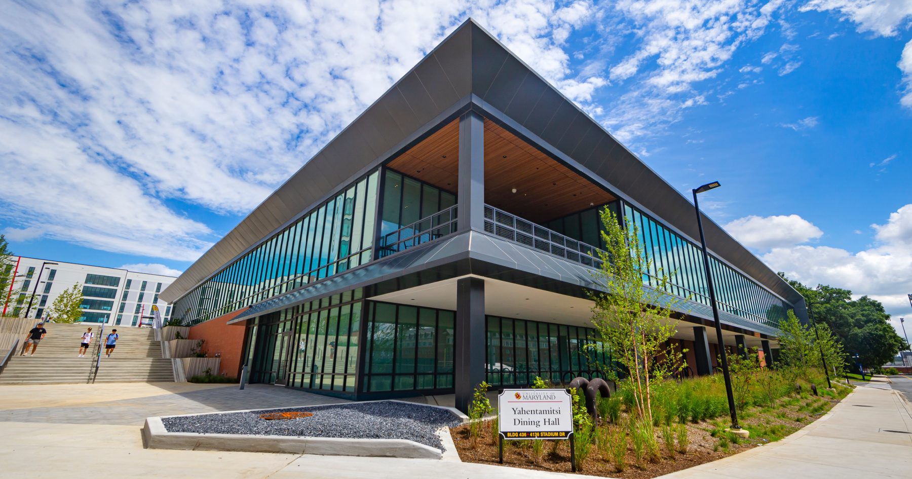

About

Hi! My name is Arman, and I am a student at UMD who was fed up with the online nutritional information being inconsistent! So, I made this website for people who want to know what they are eating at UMD! I hope this website can be a useful resource for students who want to make informed decisions about their food choices at UMD!